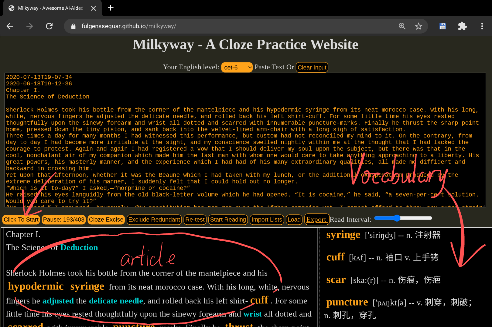
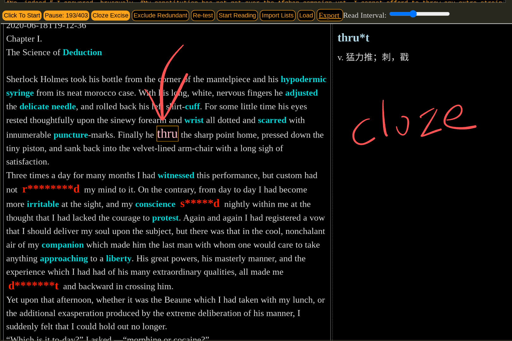

Milkyway-Cloze: Deep Congnitive Vocabulary Learning
- Quick and Efficient ONLINE English Vocabulary Memory Tool
- 利用语境迅速深度记忆英语词汇的神奇工具
- コンテキストを使用した迅速かつ効率的なオンライン英語語彙記憶魔法ツール
- 컨텍스트를 사용하는 빠르고 효율적인 온라인 영어 어휘 메모리 마법 도구
- Быстрый и эффективный онлайн-инструмент для запоминания английского словаря с помощью контекста
- أداة سحرية للذاكرة عبر الإنترنت سريعة وفعالة باستخدام السياق
1 Overview
Milkyway-cloze is a web application for vocabulary learning, which
- Generates vocabularies ONLINE using any article as context.
- And helps to develop deep and cognitive vocabulary memory by CLOZE practice.


2 Start Up:
2.1 Select a level to choose the vocabulary for learning.
2.2 PASTE the article and click START.
2.3 Click CLOZE to launch the spelling practice.
2.3.1 Control keys for the cloze:
Convenient shortkeys in the cloze process:
- ,-Comma / .-Dot: previous / next blank
- SPACE (or BACKSPACE): clear the current blank
- 4: toggle marks of the current blank
- 5: complete the current blank
- 1: show partial answer of the current blank
- ;-SEMICOLON (or ENTER): show full answer of the current blank
- 9: the 5th previous blank
- 0: the 5th next blank
2.4 Click START-READING to listen to the vocabulary.
The speed (intervals between words) is adjustable.
2.5 EXPORT or LOAD the study record.
- The last line of the text is used to generate the file name.
- The date is added automatically to the filename.
- The learning record is only refreshed each time you click PAUSE.
2.6 IMPORT-LISTS: Load multiple record files to exclude the redundant words
The words marked as blue in imported files will be automatically marked blue in the present article.
3 Code Explanation
3.1 rules.js
- The transformation rules of English postfixes are stored in rules: Array<String>.
- Each clause represents both an invert-transforming rule and a filter rule.
- Custom clauses can be inserted in order to capture more word variations following the examples bellow:
3.1.1 Rule String: -s
meets -> meet
3.1.2 Rule String: -g-n-i+e
voting -> vote
3.1.3 Rule String: -s-e-i+y
treaties -> treaty
3.1.4 Rule String: -g-n-i-%2-%s-%1$$
sitting -> sit
Explain:
- %1 = A vowel letter
- %2 = A consonant letter
- %s = Same letter as previous deleted
- $ = Restore one letter from the stack top